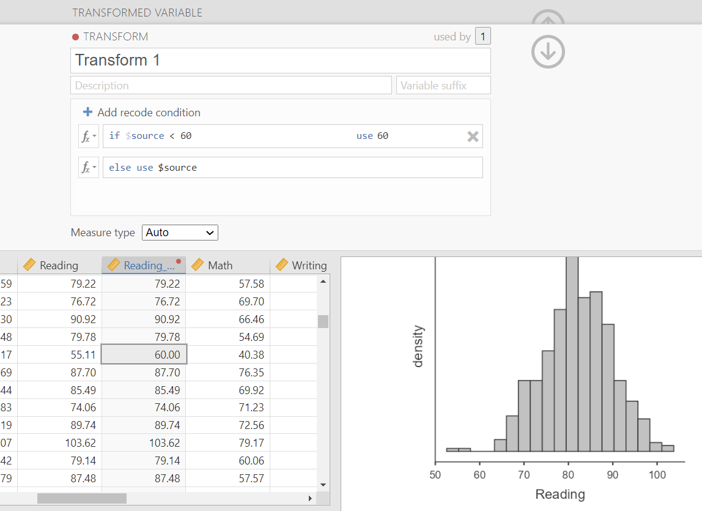

6.3 Violated assumptions
What do you do if you have violated assumptions? Let’s first talk about the assumptions we don’t test (interval/ratio data and independent scores) before we turn to the other two assumptions (normality and homogeneity of variance).
6.3.1 Interval/ratio data
If you are trying to perform a statistical test with a categorical DV, the answer is simple: perform the test that requires a categorical DV and do not try to treat it as continuous. For example, if you have an ordinal DV and a categorical IV, you can perform a chi-square. If you have an ordinal DV and a continuous IV, you can perform a logistic regression (we won’t be covering that in this class). Go back to the section on choosing the correct statistical test and you’ll see four options of statistical tests that can be performed with a categorical DV.
6.3.2 Independent data
We won’t be covering it in this class, but if you violate this assumption then you need to use a statistical test that accounts for nested data or can correlate the errors among dependent data. For example, multilevel modeling (aka hierarchical modeling) is one approach.
6.3.3 Normality or homogeneity of variance
If you violate either normality or homogeneity of variance, there are a few options you can choose.
6.3.3.1 Remove outliers
First, double check that you do not have any outliers. How do you know if data is an outlier? To look for outliers in single variables (aka univariate outliers), you can just look at your data. To look for multivariate outliers (outliers across multiple variables), you can look at Mahalanobis distance or Cook’s distance, which you would need to use the Rj editor to perform in jamovi and we won’t cover in this class.
What can you do in case of outliers?
- Ignore them, but this is not a good solution
- Delete the outlier cases, but this is not recommended either because you lose data and we now know how important it is to have a large sample size
- Winsorize, trim, or modify your data, especially if there are only a few outliers
- Transform the variable, especially if there are a lot of outliers
6.3.3.2 Winsorize or trim the data
Winsorizing is used when both tails of the distribution have outliers whereas trimming is used when it’s just one or a few outliers on one side of the distribution. In both cases, we replace the extreme valuse with the next-most-extreme values. There’s more to Winsorizing than what I’ve described here, so I encourage you to learn more if you are interested.
We can do this through the Transform feature on jamovi. For example, here’s what it looks like to trim the Reading variable to get rid of the few scores on the far left of the histogram. We want to take those values less than 60 and replace their scores with a new score of 60.

6.3.3.3 Transforming data
If we violate the assumption of normality or homogeneity of variance (or both!) then we can explore whether transformations of the entire variable can improve the normality of our data. There are a variety of different transformations you can try, and here’s a list of a few:
| Name | Syntax | Corrects for positive skew? | Corrects for negative skew? | Corrects for unequal variances? |
|---|---|---|---|---|
| Log | log(X) | Yes | No | Yes |
| Square Root | sqrt(X) | Yes | No | Yes |
| Reciprocal | 1/X | Yes | No | Yes |
| Reverse Score | (1+MAX) - X then do one of the above transformations |
No | Yes | No |
When you perform a transformation, then you need to check whether the transformation actually improved the situation. How do you do that? Check normality and homogeneity of variance again with your newly transformed data! You should check with the 4 methods to test for normality and 2 methods to test for homogeneity of variance.
6.3.3.4 Non-parametric tests
If all else fails–meaning there are no outliers or no transformations fix the violated assumption(s)–then you can perform a non-parametric test. These tests have no assumption of normally distributed data or homogeneity of variance! As you saw in the chart about choosing the correct statistical test, many of our parametric tests have non-parametric equivalents.
When we cover each individual statistical test (e.g., independent t-test) we will also cover its non-parametric equivalent (e.g., Mann-Whitney test). So stay tuned and just remember you have this option if you violate assumptions!